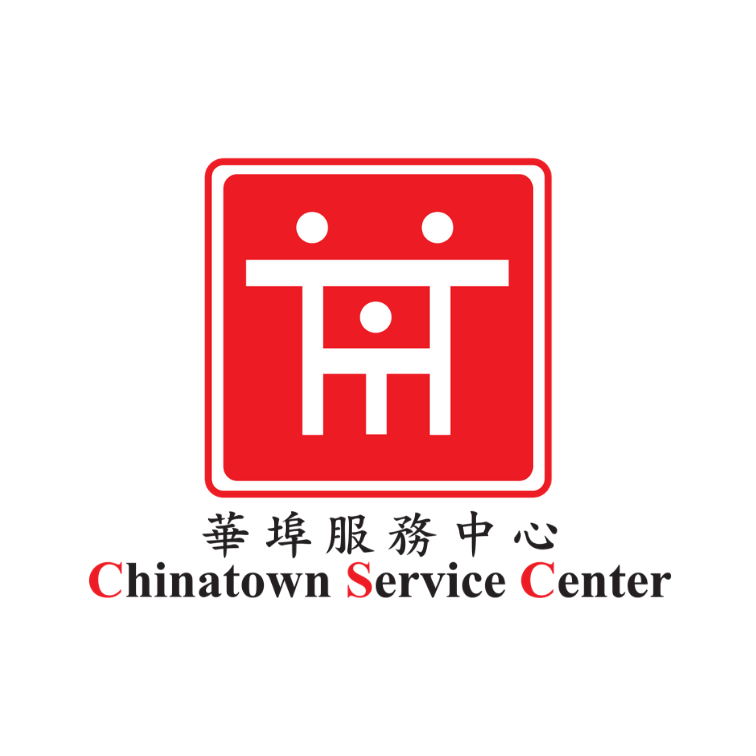
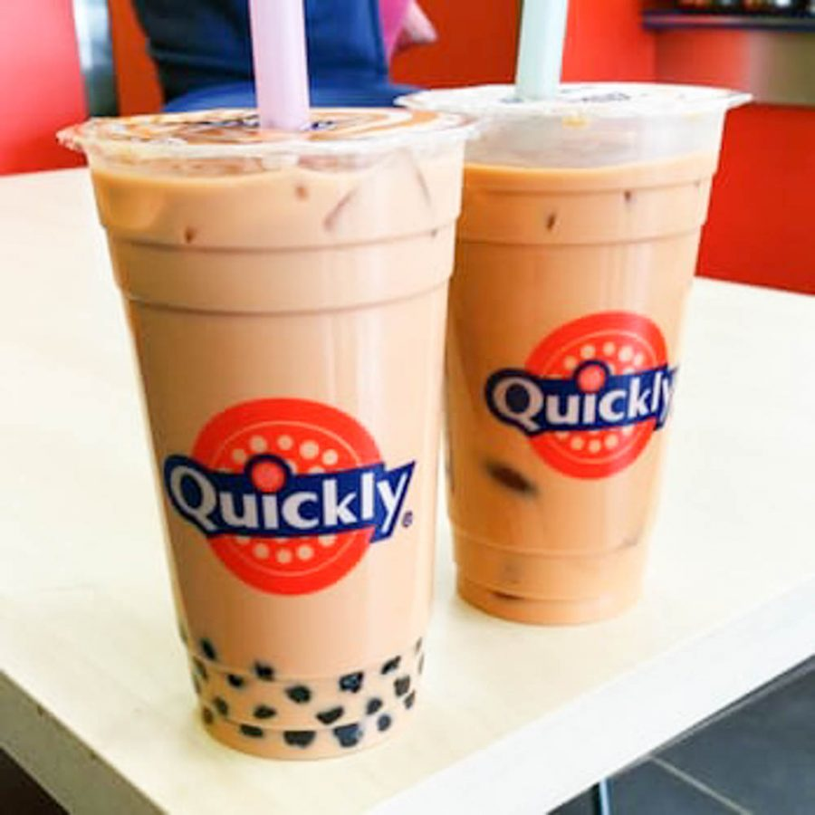

Sunny Yang
My name is Sunny Yang. I am currently a student attending the University of California, Riverside.
I am a transfer student from the California State University of Los Angeles.
This is my first year at the University of California, Riverside as a junior.
I am a psychology major and have plenty of job experiences from volunteering and internships throughout my lifetime.
My skills vary from all over the place. I am bilingual with the ability to communicate in both Chinese and English.
I am also proficient in handling with technology, notably with computers and portable devices. This includes the ability to operate programs such as the Microsoft Office suite.
Some characteristics that describe me would be that I am really hard-working. Whatever the job may be, I am able to keep focus and make sure the job gets done with quality, rather than finishing the job at hand as fast as I can.
I am also really organized, allowing me to keep track of my work, rather than stressing with clutter.
Another note is that I am great at managing my time. This allows me to keep a mental schedule of time and work according to the clock.
Regarding others, I am very patient and like to avoid conflict with my fellow coworkers, allowing me to adapt and collaborate in any given situation along with my time management skills that keep my stress levels low in relation to time.
Living in Los Angeles, I have volunteered and interned at an organization titled the Chinatown Service Center located in Chinatown. This organization specializes in hosting special events that relate to Chinese culture, such as Chinese New Year where street parades are organized, helping Chinese immigrants with official government documents through translation, etc.
They also help with Chinese immigrant children adapt with American culture and the learning of English, which may be a second language to most of this group.
This is where I have spent most of my time with volunteering and internships. Through opportunities like these, I have developed my skills of being bilingual, my skills with the Microsoft Office suite, and my patience with dealing with unsatisfied customers.
I also have job experience from being a barista/cashier at a quite known boba shop called Quickly, located in various areas such as Rosemead and Chinatown.
Located near a school, the environment becomes quite hectic as students enter one by one. This puts pressure on my time management and patience with unhappy customers, where I execute drinks and orders in a quick fashion that leaves most customers satisfied.
There are other tasks that are involved with the job, such as making tea and cleaning the fridge that takes a huge chunk of time from serving customers. On days where there are only a few workers in, this puts an even more strain on time management with addition of quality of the products made.
Through this, I have executed these time consuming tasks along with serving customers with my time management skills to carry out in an efficient way while still having spare time in case anything happens or something comes up.
Experience
Volunteer
• Tutored Chinese immigrants who had a hard time with school work
• Participated in events that promoted Chinese culture in Chinatown
• Participated in outside events such as Beach Cleanup
Intern
• Operated Microsoft Office suites such as Word, PowerPoint, and Excel
• Operated front desk by answering phone calls and responding to voicemails in both English and Chinese
Cashier/Barista
• Executed customer orders in a quick fashion that guaranteed customer satisfaction
• Operated at cash register
• Took customer orders in both English and Chinese
Education
Downtown Magnets High School
California State University of Los Angeles
University of California Riverside
Portfolio

